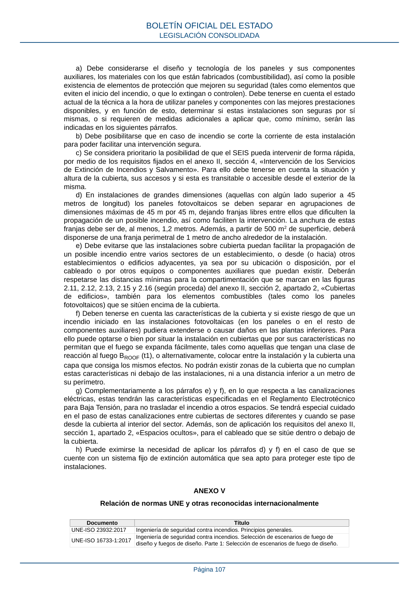
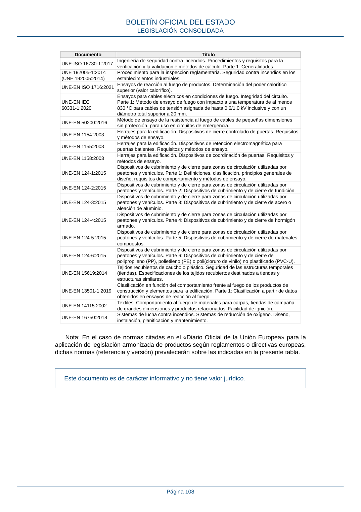

RSCIEI · ANEXO V · versión 2025-04-10 · capa asociada
Formatos: JSON compacto · Markdown · PDF fuente
Ámbito del documento · texto del ámbito · documento y tablas
ID técnico a0148 · PDF pág. 107-108 · jerarquía no validada por persona · contrastado con el literal de la página 107 (candidato tipográfico); no validado por persona · padre: raíz
ANEXO V Relación de normas UNE y otras reconocidas internacionalmente Documento Título UNE-ISO 23932:2017 Ingeniería de seguridad contra incendios. Principios generales. UNE-ISO 16733-1:2017 Ingeniería de seguridad contra incendios. Selección de escenarios de fuego de diseño y fuegos de diseño. Parte 1: Selección de escenarios de fuego de diseño. BOLETÍN OFICIAL DEL ESTADO LEGISLACIÓN CONSOLIDADA Página 107 Documento Título UNE-ISO 16730-1:2017 Ingeniería de seguridad contra incendios. Procedimientos y requisitos para la verificación y la validación e métodos de cálculo. Parte 1: Generalidades. UNE 192005-1:2014 (UNE 192005:2014) Procedimiento para la inspección reglamentaria. Seguridad contra incendios en los establecimientos industriales. UNE-EN ISO 1716:2021Ensayos de reacción al fuego de productos. Determinación del poder calorífico superior (valor calorífico). UNE-EN IEC 60331-1:2020 Ensayos para cables eléctricos en condiciones de fuego. Integridad del circuito. Parte 1: Método de ensayo de fuego con impacto a una temperatura de al menos 830 °C para cables de tensión asignada de hasta 0,6/1,0 kV inclusive y con un diámetro total superior a 20 mm. UNE-EN 50200:2016 Método de ensayo de la resistencia al fuego de cables de pequeñas dimensiones sin protección, para uso en circuitos de emergencia. UNE-EN 1154:2003 Herrajes para la edificación. Dispositivos de cierre controlado de puertas. Requisitos y métodos de ensayo. UNE-EN 1155:2003 Herrajes para la edificación. Dispositivos de retención electromagnética para puertas batientes. Requisitos y métodos de ensayo. UNE-EN 1158:2003 Herrajes para la edificación. Dispositivos de coordinación de puertas. Requisitos y métodos de ensayo. UNE-EN 124-1:2015 Dispositivos de cubrimiento y de cierre para zonas de circulación utilizadas por peatones y vehículos. Parte 1: Definiciones, clasificación, principios generales de diseño, requisitos de comportamiento y métodos de ensayo. UNE-EN 124-2:2015 Dispositivos de cubrimiento y de cierre para zonas de circulación utilizadas por peatones y vehículos. Parte 2: Dispositivos de cubrimiento y de cierre de fundición. UNE-EN 124-3:2015 Dispositivos de cubrimiento y de cierre para zonas de circulación utilizadas por peatones y vehículos. Parte 3: Dispositivos de cubrimiento y de cierre de acero o aleación de aluminio. UNE-EN 124-4:2015 Dispositivos de cubrimiento y de cierre para zonas de circulación utilizadas por peatones y vehículos. Parte 4: Dispositivos de cubrimiento y de cierre de hormigón armado. UNE-EN 124-5:2015 Dispositivos de cubrimiento y de cierre para zonas de circulación utilizadas por peatones y vehículos. Parte 5: Dispositivos de cubrimiento y de cierre de materiales compuestos. UNE-EN 124-6:2015 Dispositivos de cubrimiento y de cierre para zonas de circulación utilizadas por peatones y vehículos. Parte 6: Dispositivos de cubrimiento y de cierre de polipropileno (PP), polietileno (PE) o poli(cloruro de vinilo) no plastificado (PVC-U). UNE-EN 15619:2014 Tejidos recubiertos de caucho o plástico. Seguridad de las estructuras temporales (tiendas). Especificaciones de los tejidos recubiertos destinados a tiendas y estructuras similares. UNE-EN 13501-1:2019 Clasificación en función del comportamiento frente al fuego de los productos de construcción y elementos para la edificación. Parte 1: Clasificación a partir de datos obtenidos en ensayos de reacción al fuego. UNE-EN 14115:2002 Textiles. Comportamiento al fuego de materiales para carpas, tiendas de campaña de grandes dimensiones y productos relacionados. Facilidad de ignición. UNE-EN 16750:2018 Sistemas de lucha contra incendios. Sistemas de reducción de oxígeno. Diseño, instalación, planificación y mantenimiento. Nota: En el caso de normas citadas en el «Diario Oficial de la Unión Europea» para la aplicación de legislación armonizada de productos según reglamentos o directivas europeas, dichas normas (referencia y versión) prevalecerán sobre las indicadas en la presente tabla. Este documento es de carácter informativo y no tiene valor jurídico. BOLETÍN OFICIAL DEL ESTADO LEGISLACIÓN CONSOLIDADA Página 108


PDF fuente redistribuible: copia fiel enlazada en esta página (SHA256 verificado).